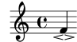
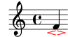
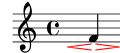
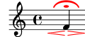
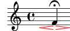
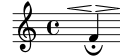
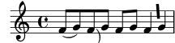

| [ << Scheme tutorial ] | [Top][Contents][Index] | [ Interfaces for programmers >> ] |
| [ < Building complicated functions ] | [ Up: Building complicated functions ] | [ Displaying music expressions > ] |
1.3.1 A first approach (example)
- The problem
Using the following input, the ‘espressivo’ sign (i.e., the two small hairpins) should become wider, but not taller.
{ f'\espressivo }

- Possible solutions
- create a new stencil
- scale the default stencil in direction of the X-axis
- Thoughts about previous item
Solution A is doable. However, it will result in a higher coding effort. On the other hand, solution B is cheaper, but it has the disadvantage that it doesn’t print acceptable results in all cases (although you may not know this before you’ve actually tried).
⇒ choose solution B.
- Coding
- If you want to manipulate the default stencil you have to find
information about it.
The espressivo sign is a
Scriptgrob. Looking this up in the IR (Script), we see‘stencil’ (stencil): ‘ly:script-interface::print’Let us test whether this is correct. To be sure that we affect the correct grob we are going to use colors. There is a predefined function for that, see Scheme functions.
-- Function: stencil-with-color stencil color Return a modified version of the given stencil that is colored with the given color. See ‘normalize-color’ for possible color formats.-- Function: normalize-color color Convert a color given in any of the supported formats into a list of 4 numbers: R, G, B, A. Possible formats are: such a list of 4 numbers; a list of 3 numbers (transparency defaults to 1.0); a CSS string (named color, or “#RRGGBB”, or “#RRGGBBAA”, or “#RGB”, or “#RGBA”).Using a named color (‘red’), this results in the following code.
colorDefaultStencil = \once \override Script.stencil = % `lambda` starts a procedure; its argument is `grob`. #(lambda (grob) ;; With `let`, local variables are defined. (let ((stil (ly:script-interface::print grob))) ;; The procedure returns the colored default stencil. (stencil-with-color stil red))) { \colorDefaultStencil f'\espressivo }
![[image of music]](../eb/lily-bdc4f771.png)
Fine, works.
- This kind of operation – taking a default stencil or property and
returning a modified version of it – is very common, and LilyPond
provides a special function for it:
grob-transformer.-- Function: grob-transformer property func Create an override value good for applying FUNC to either pure or unpure values. FUNC is called with the respective grob as first argument and the default value (after resolving all callbacks) as the second.Let’s try that. (The concept of pure vs. unpure gets explained later, see Unpure-pure containers; we can ignore it for now).
colorDefaultStencil = \once \override Script.stencil = #(grob-transformer 'stencil (lambda (grob orig) (stencil-with-color orig red))) { \colorDefaultStencil f'\espressivo }

Success!
- To get a scaled stencil we have to use
-- Function: ly:stencil-scale stil x y Scale stencil STIL using the horizontal and vertical scaling factors X and optional Y (defaulting to X). Negative values flip or mirror STIL without changing its origin; this may result in collisions unless it is repositioned.from the same chapter in the Internals Reference.
Result:
scaleColorDefaultStencil = \once \override Script.stencil = #(grob-transformer 'stencil (lambda (grob orig) (stencil-with-color (ly:stencil-scale orig ;; 1 is the neutral element with ly:stencil-scale, ;; i.e., scaling with '1 1' (for x- and y-axis) ;; returns a visibly unchanged stencil. 2 1) red))) { \scaleColorDefaultStencil f'\espressivo }

Apart from the color that seems to be the desired output.
- There are some problems, though, as can be seen in the following example
{ \scaleColorDefaultStencil f'_\espressivo ^\fermata }
- − The fermata is scaled, too.
- − Having to type the command before the note(s) and
\espressivoafter the note(s) is annoying.
Solution for both: use
\tweak!{ f'-\tweak stencil #(grob-transformer 'stencil (lambda (grob orig) (stencil-with-color (ly:stencil-scale orig 2 1) red))) _\espressivo ^\fermata }
![[image of music]](../7a/lily-335bb7c4.png)
This does what we want, however, typing so much isn’t nice – let’s define a variable and use it with the tweak. With some copy and paste we get
#(define longer-script (grob-transformer 'stencil (lambda (grob orig) (stencil-with-color (ly:stencil-scale orig 2 1) red)))) { f'-\tweak stencil #longer-script _\espressivo ^\fermata }

Works fine, though the scaling values are hard-coded, and typing
-\tweak stencil #longer-scriptrepeatedly is still awkward.To fix that, let’s first introduce some variables in
longer-scriptfor x and y scaling values.#(define (longer-script x y) (grob-transformer 'stencil (lambda (grob orig) (stencil-with-color (ly:stencil-scale orig x y) red))))Second, to reduce typing, we define an event function, see Event functions. The elements in the first parenthesis group (‘(x-val y-val)’) are the function variables, the elements in the second parenthesis group the respective variable types (two times we check for a number; see Predefined type predicates for possible tests).
scaleEspr = #(define-event-function (x-val y-val) (number? number?) #{ \tweak stencil #(longer-script x-val y-val) \espressivo #}) { f'_\scaleEspr 2 1 ^\fermata }![[image of music]](../21/lily-c7d54992.png)
Works as expected, fine! Note the use of
#{ … #}: Within this Scheme construction, we can use LilyPond syntax, and the function’s arguments (like x-val) are properly expanded. See LilyPond code blocks.
- If you want to manipulate the default stencil you have to find
information about it.
- The finished code
Finally, we want to do some clean-up.
- − We only want scaling in the x-direction, so let’s hard-code y-scaling in the event function.
- − Delete the color.
This eventually leads to the following code.
#(define (longer-script x y) (grob-transformer 'stencil (lambda (grob orig) (ly:stencil-scale orig x y)))) longEspressivo = #(define-event-function (x-val) (number?) #{ \tweak stencil #(longer-script x-val 1) \espressivo #}) { f'^\longEspressivo #2 _\fermata }

Voilà!
The main benefit of using
grob-transformeris that we no longer have to take care of the actual name of the stencil function. In the next example we rotate the stencil of a slur and a beam by 90 degrees – that the actual stencil functions are calledly:slur::printandly:beam::print, respectively, is of no concern here.#(define rotate-90 (grob-transformer 'stencil (lambda (grob orig) (ly:stencil-rotate orig 90 0 0)))) { f'8( g') f'8-\tweak stencil #rotate-90 ( g') f'8[ g'] f'8-\tweak stencil #rotate-90 [ g'] }

| [ << Scheme tutorial ] | [Top][Contents][Index] | [ Interfaces for programmers >> ] |
| [ < Building complicated functions ] | [ Up: Building complicated functions ] | [ Displaying music expressions > ] |